2024 National 5 Computing Science questions
Source: Scottish Qualifications Authority (SQA) / Qualifications Scotland. This is a StemInteract HTML companion, not an official HTML edition. Selectable text is supplied alongside original page images. Use the images or original PDF for equations, powers, fractions, vector notation, tables and diagrams; text extraction cannot fully preserve mathematical layout.
Jump to a question
PDF page 1
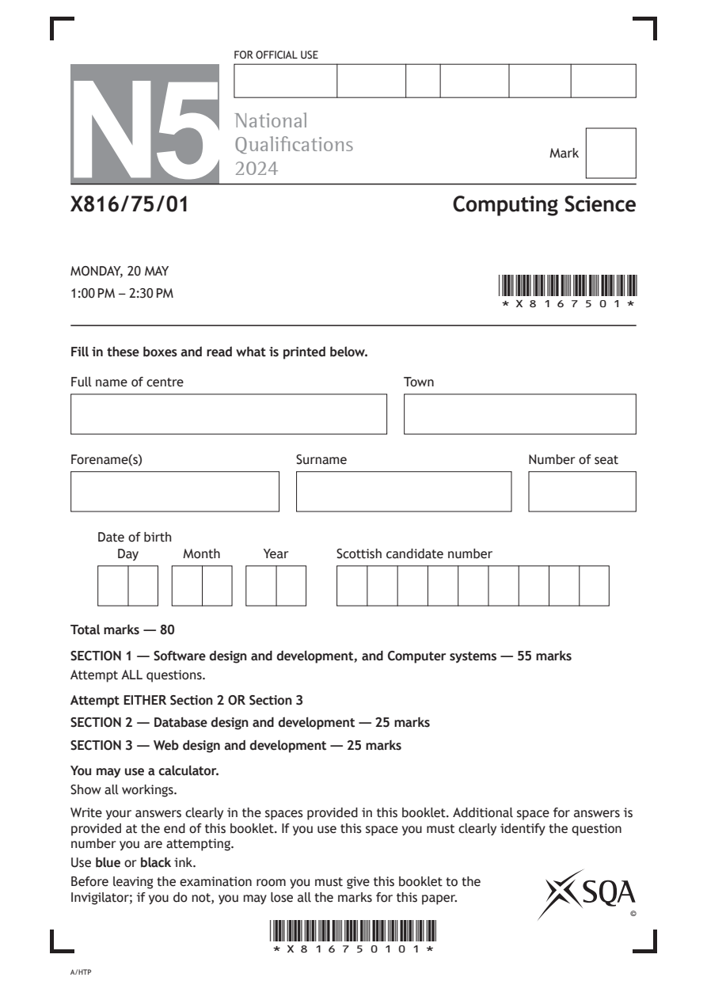
Selectable page text
FOR OFFICIAL USE
N5
National
Qualications
Mark
2024
X816/75/01 Computing Science
MONDAY, 20 MAY
1:00 PM – 2:30 PM
*X8167501*
Fill in these boxes and read what is printed below.
Full name of centre Town
Forename(s) Surname Number of seat
Date of birth
Day Month Year Scottish candidate number
Total marks — 80
SECTION 1 — Software design and development, and Computer systems — 55 marks
Attempt ALL questions.
Attempt EITHER Section 2 OR Section 3
SECTION 2 — Database design and development — 25 marks
SECTION 3 — Web design and development — 25 marks
You may use a calculator.
Show all workings.
Write your answers clearly in the spaces provided in this booklet. Additional space for answers is
provided at the end of this booklet. If you use this space you must clearly identify the question
number you are attempting.
Use blue or black ink.
Before leaving the examination room you must give this booklet to the
Invigilator; if you do not, you may lose all the marks for this paper.
©
*X816750101*
A/HTPPDF page 2
Question 1Question 2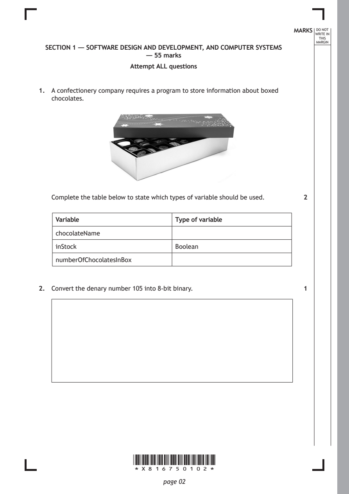
Selectable page text
MARKS DO NOT
WRITE IN
THIS
MARGIN
SECTION 1 — SOFTWARE DESIGN AND DEVELOPMENT, AND COMPUTER SYSTEMS
— 55 marks
Attempt ALL questions
1. A confectionery company requires a program to store information about boxed
chocolates.
Complete the table below to state which types of variable should be used. 2
Variable Type of variable
chocolateName
inStock Boolean
numberOfChocolatesInBox
2. Convert the denary number 105 into 8‑bit binary. 1
*X816750102*
page 02PDF page 3
Question 3Question 4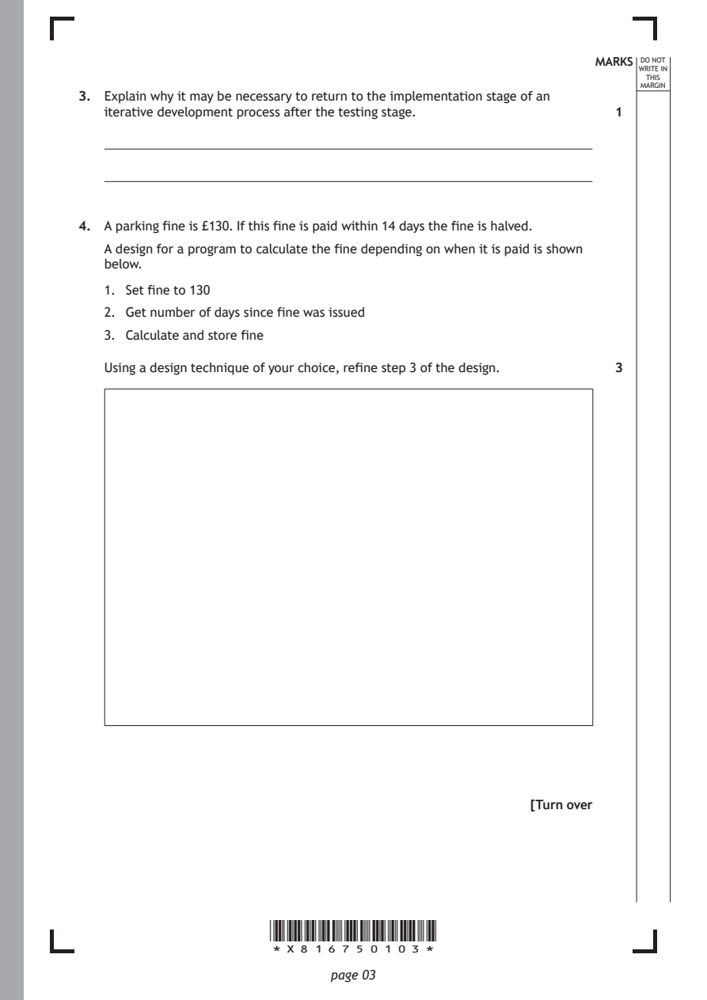
Selectable page text
MARKS DO NOT
WRITE IN
THIS
MARGIN
3. Explain why it may be necessary to return to the implementation stage of an
iterative development process after the testing stage. 1
4. A parking fine is £130. If this fine is paid within 14 days the fine is halved.
A design for a program to calculate the fine depending on when it is paid is shown
below.
1. Set fine to 130
2. Get number of days since fine was issued
3. Calculate and store fine
Using a design technique of your choice, refine step 3 of the design. 3
[Turn over
*X816750103*
page 03PDF page 4
Question 5Question 6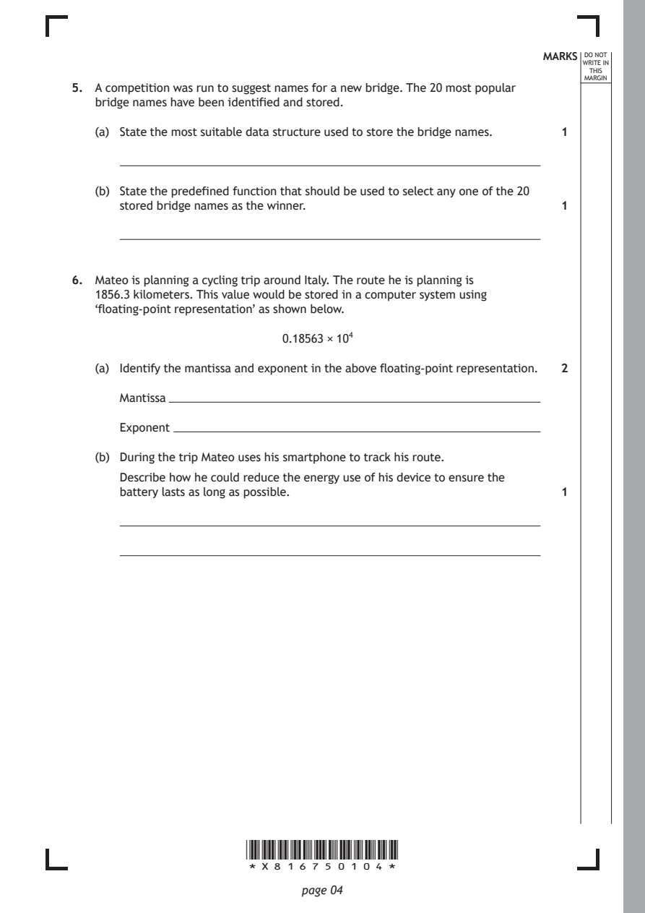
Selectable page text
MARKS DO NOT
WRITE IN
THIS
MARGIN
5. A competition was run to suggest names for a new bridge. The 20 most popular
bridge names have been identified and stored.
(a) State the most suitable data structure used to store the bridge names. 1
(b) State the predefined function that should be used to select any one of the 20
stored bridge names as the winner. 1
6. Mateo is planning a cycling trip around Italy. The route he is planning is
1856.3 kilometers. This value would be stored in a computer system using
‘floating‑point representation’ as shown below.
0.18563 × 104
(a) Identify the mantissa and exponent in the above floating‑point representation. 2
Mantissa
Exponent
(b) During the trip Mateo uses his smartphone to track his route.
Describe how he could reduce the energy use of his device to ensure the
battery lasts as long as possible. 1
*X816750104*
page 04PDF page 5
Question 7Question 8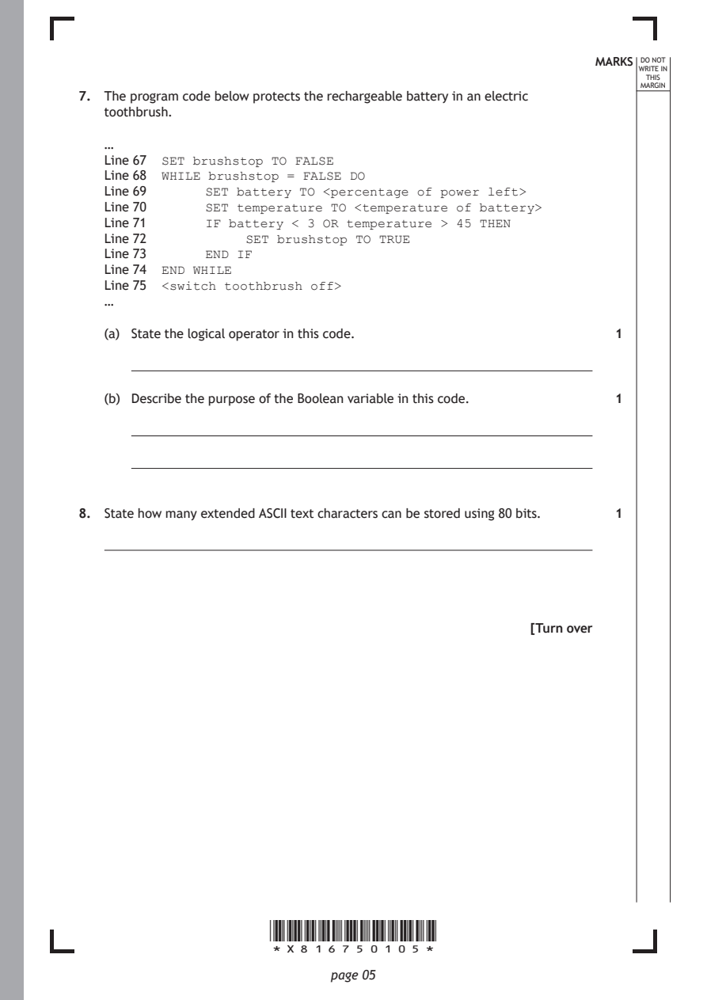
Selectable page text
MARKS DO NOT
WRITE IN
THIS
MARGIN
7. The program code below protects the rechargeable battery in an electric
toothbrush.
…
Line 67
SET brushstop TO FALSE
Line 68
WHILE brushstop = FALSE DO
Line 69
SET battery TO <percentage of power left>
Line 70
SET temperature TO <temperature of battery>
Line 71
IF battery < 3 OR temperature > 45 THEN
Line 72
SET brushstop TO TRUE
Line 73
END IF
Line 74
END WHILE
Line 75
<switch toothbrush off>
…
(a) State the logical operator in this code. 1
(b) Describe the purpose of the Boolean variable in this code. 1
8. State how many extended ASCII text characters can be stored using 80 bits. 1
[Turn over
*X816750105*
page 05PDF page 6
Question 9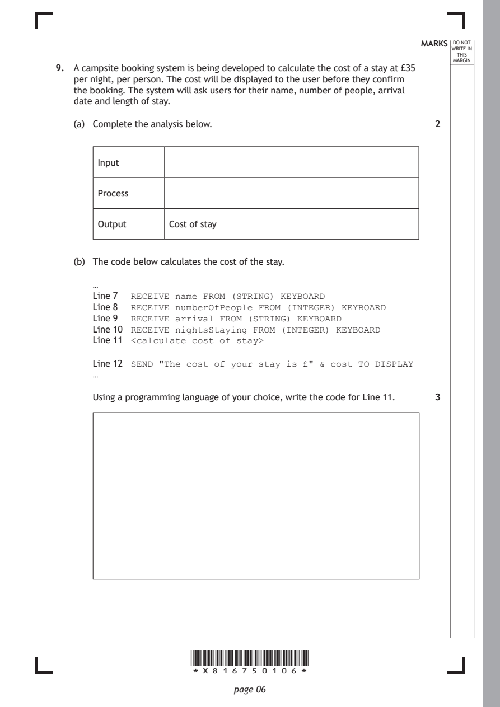
Selectable page text
MARKS DO NOT
WRITE IN
THIS
MARGIN
9. A campsite booking system is being developed to calculate the cost of a stay at £35
per night, per person. The cost will be displayed to the user before they confirm
the booking. The system will ask users for their name, number of people, arrival
date and length of stay.
(a) Complete the analysis below. 2
Input
Process
Output Cost of stay
(b) The code below calculates the cost of the stay.
…
Line 7
RECEIVE name FROM (STRING) KEYBOARD
Line 8
RECEIVE numberOfPeople FROM (INTEGER) KEYBOARD
Line 9
RECEIVE arrival FROM (STRING) KEYBOARD
Line 10
RECEIVE nightsStaying FROM (INTEGER) KEYBOARD
Line 11
<calculate cost of stay>
Line 12
SEND "The cost of your stay is £" & cost TO DISPLAY
…
Using a programming language of your choice, write the code for Line 11. 3
*X816750106*
page 06PDF page 7
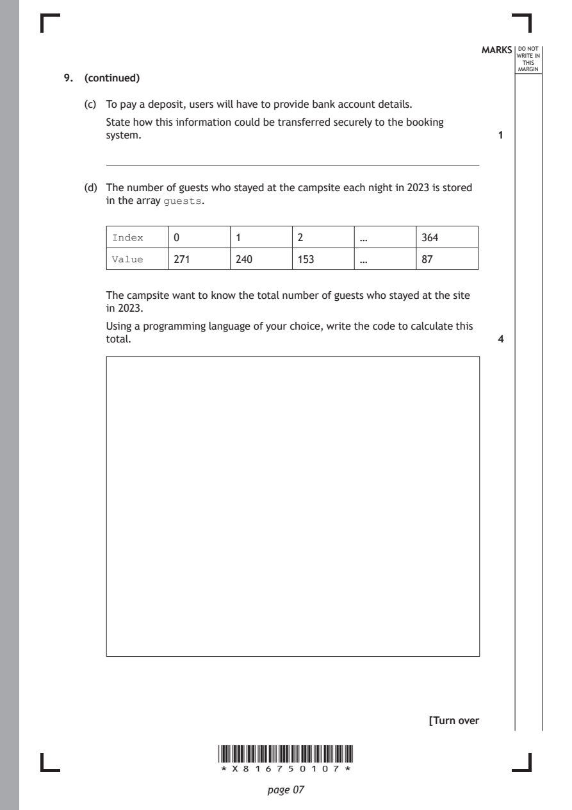
Selectable page text
MARKS DO NOT
WRITE IN
THIS
MARGIN
9. (continued)
(c) To pay a deposit, users will have to provide bank account details.
State how this information could be transferred securely to the booking
system. 1
(d) The number of guests who stayed at the campsite each night in 2023 is stored
in the array .
guests
0 1 2 … 364
Index
271 240 153 … 87
Value
The campsite want to know the total number of guests who stayed at the site
in 2023.
Using a programming language of your choice, write the code to calculate this
total. 4
[Turn over
*X816750107*
page 07PDF page 8
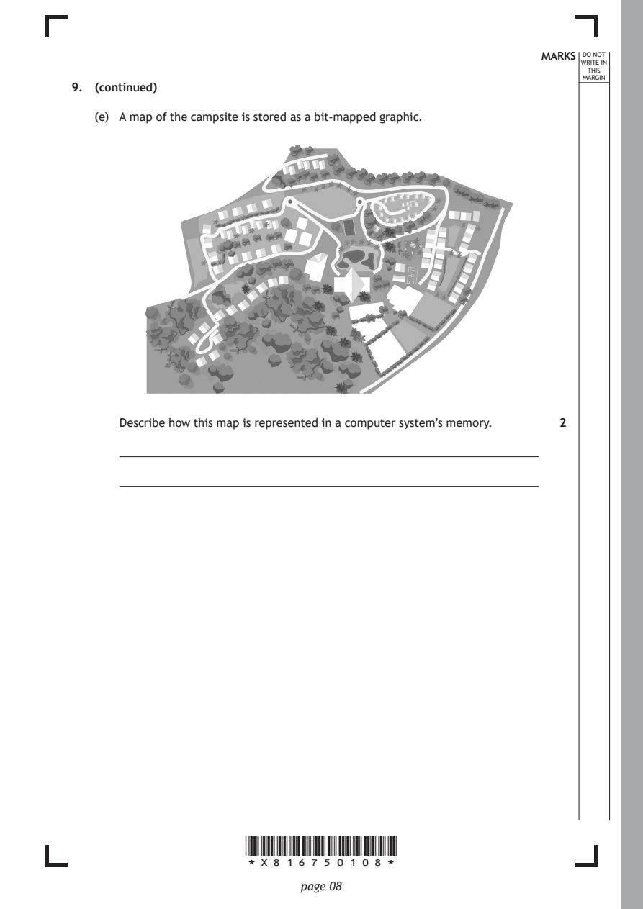
Selectable page text
MARKS DO NOT
WRITE IN
THIS
MARGIN
9. (continued)
(e) A map of the campsite is stored as a bit‑mapped graphic.
Describe how this map is represented in a computer system’s memory. 2
*X816750108*
page 08PDF page 9
Question 10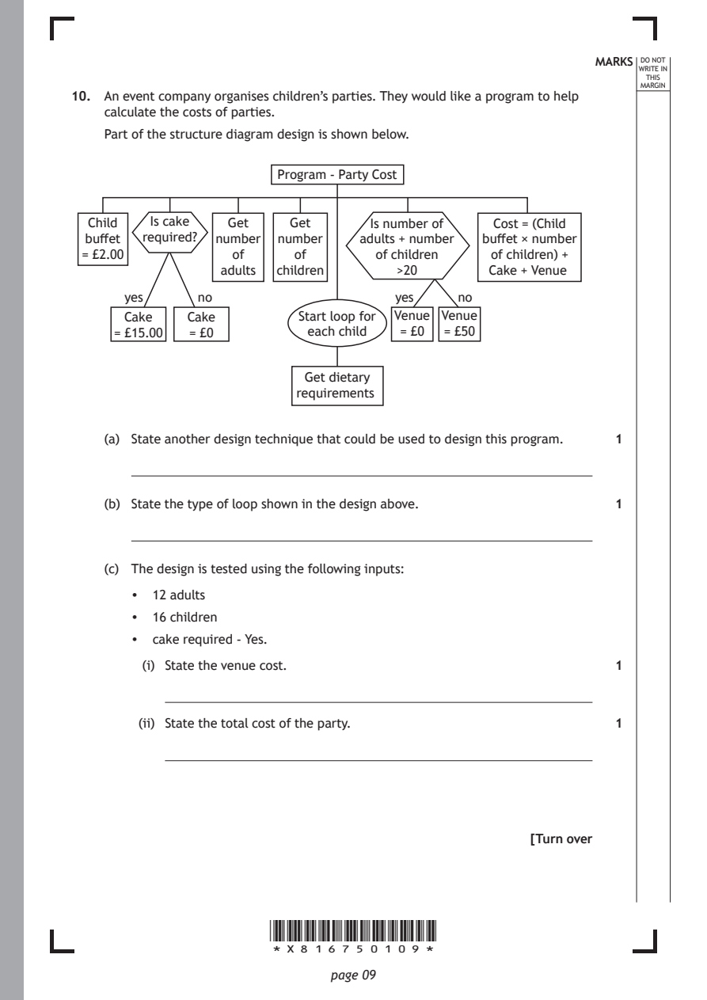
Selectable page text
MARKS DO NOT
WRITE IN
THIS
MARGIN
10. An event company organises children’s parties. They would like a program to help
calculate the costs of parties.
Part of the structure diagram design is shown below.
Program - Party Cost
Child Is cake Get Get Is number of Cost = (Child
buffet required? number number adults + number buffet × number
= £2.00 of of of children of children) +
adults children >20 Cake + Venue
yes no yes no
Cake Cake Start loop for Venue Venue
= £15.00 = £0 each child = £0 = £50
Get dietary
requirements
(a) State another design technique that could be used to design this program. 1
(b) State the type of loop shown in the design above. 1
(c) The design is tested using the following inputs:
• 12 adults
• 16 children
• cake required ‑ Yes.
(i) State the venue cost. 1
(ii) State the total cost of the party. 1
[Turn over
*X816750109*
page 09PDF page 10
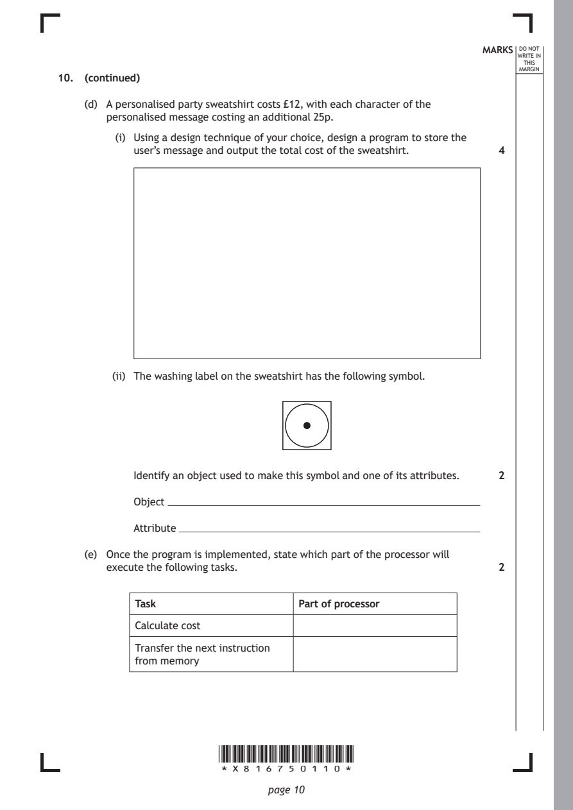
Selectable page text
MARKS DO NOT
WRITE IN
THIS
MARGIN
10. (continued)
(d) A personalised party sweatshirt costs £12, with each character of the
personalised message costing an additional 25p.
(i) Using a design technique of your choice, design a program to store the
user’s message and output the total cost of the sweatshirt. 4
(ii) The washing label on the sweatshirt has the following symbol.
Identify an object used to make this symbol and one of its attributes. 2
Object
Attribute
(e) Once the program is implemented, state which part of the processor will
execute the following tasks. 2
Task Part of processor
Calculate cost
Transfer the next instruction
from memory
*X816750110*
page 10PDF page 11
Question 11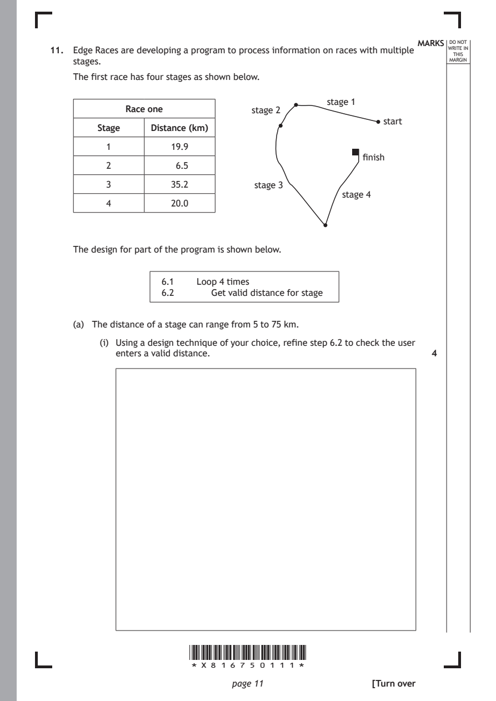
Selectable page text
MARKS DO NOT
11. Edge Races are developing a program to process information on races with multiple WRITE IN
THIS
stages. MARGIN
The first race has four stages as shown below.
stage 1
Race one stage 2
start
Stage Distance (km)
1 19.9
finish
2 6.5
3 35.2 stage 3
stage 4
4 20.0
The design for part of the program is shown below.
6.1 Loop 4 times
6.2 Get valid distance for stage
(a) The distance of a stage can range from 5 to 75 km.
(i) Using a design technique of your choice, refine step 6.2 to check the user
enters a valid distance. 4
*X816750111*
page 11 [Turn overPDF page 12
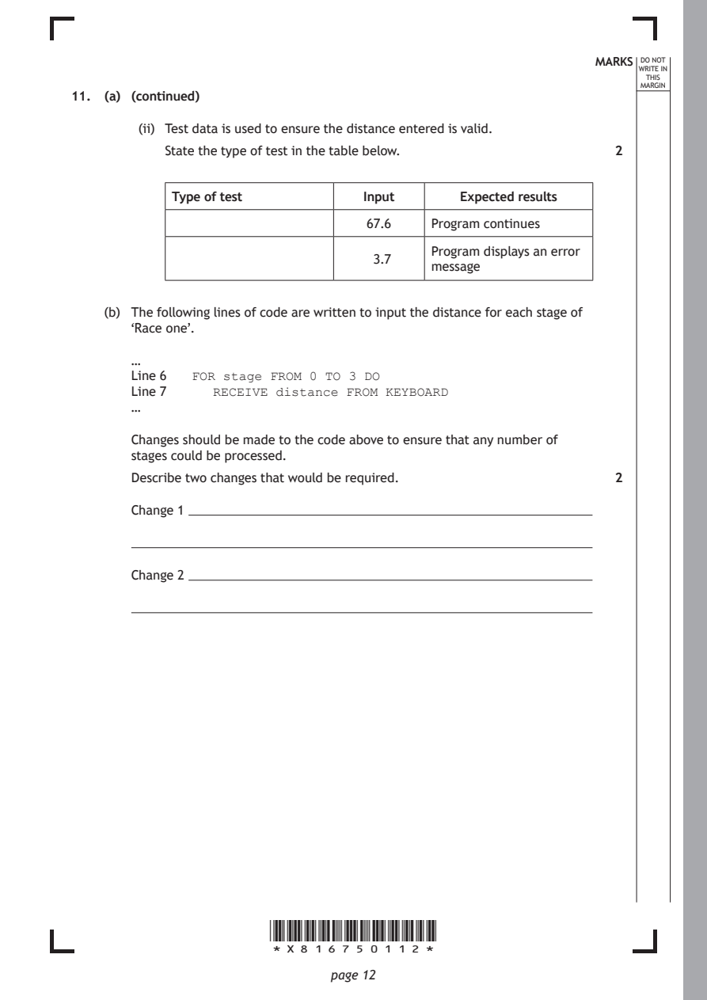
Selectable page text
MARKS DO NOT
WRITE IN
THIS
MARGIN
11. (a) (continued)
(ii) Test data is used to ensure the distance entered is valid.
State the type of test in the table below. 2
Type of test Input Expected results
67.6 Program continues
Program displays an error
3.7
message
(b) The following lines of code are written to input the distance for each stage of
‘Race one’.
…
Line 6
FOR stage FROM 0 TO 3 DO
Line 7
RECEIVE distance FROM KEYBOARD
…
Changes should be made to the code above to ensure that any number of
stages could be processed.
Describe two changes that would be required. 2
Change 1
Change 2
*X816750112*
page 12PDF page 13
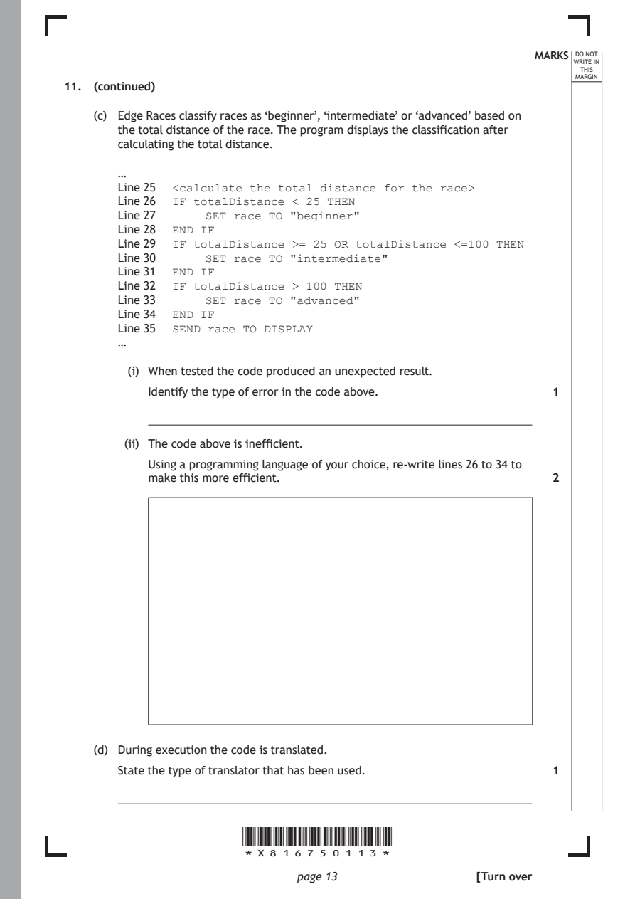
Selectable page text
MARKS DO NOT
WRITE IN
THIS
MARGIN
11. (continued)
(c) Edge Races classify races as ‘beginner’, ‘intermediate’ or ‘advanced’ based on
the total distance of the race. The program displays the classification after
calculating the total distance.
…
Line 25
<calculate the total distance for the race>
Line 26
IF totalDistance < 25 THEN
Line 27
SET race TO "beginner"
Line 28
END IF
Line 29
IF totalDistance >= 25 OR totalDistance <=100 THEN
Line 30
SET race TO "intermediate"
Line 31
END IF
Line 32
IF totalDistance > 100 THEN
Line 33
SET race TO "advanced"
Line 34
END IF
Line 35
SEND race TO DISPLAY
…
(i) When tested the code produced an unexpected result.
Identify the type of error in the code above. 1
(ii) The code above is inefficient.
Using a programming language of your choice, re‑write lines 26 to 34 to
make this more efficient. 2
(d) During execution the code is translated.
State the type of translator that has been used. 1
*X816750113*
page 13 [Turn overPDF page 14
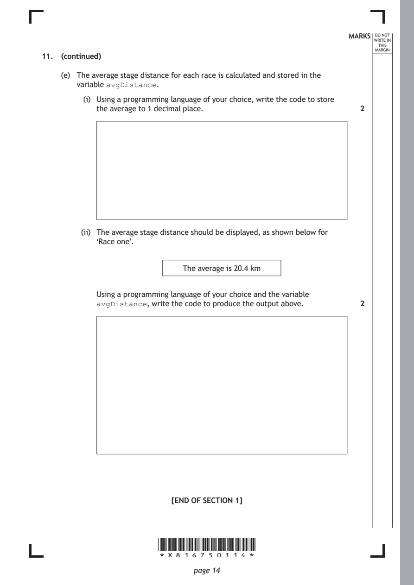
Selectable page text
MARKS DO NOT
WRITE IN
THIS
MARGIN
11. (continued)
(e) The average stage distance for each race is calculated and stored in the
variable .
avgDistance
(i) Using a programming language of your choice, write the code to store
the average to 1 decimal place. 2
(ii) The average stage distance should be displayed, as shown below for
‘Race one’.
The average is 20.4 km
Using a programming language of your choice and the variable
, write the code to produce the output above. 2
avgDistance
[END OF SECTION 1]
*X816750114*
page 14PDF page 15
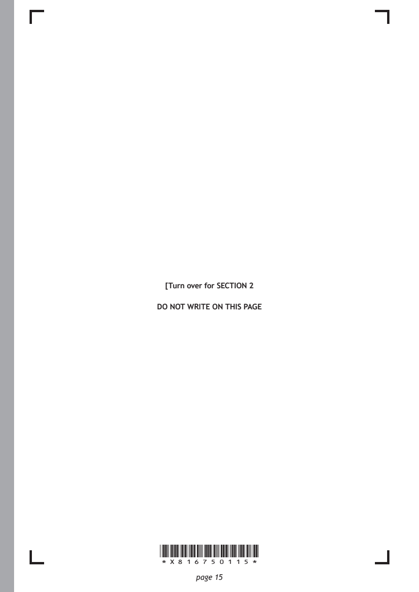
Selectable page text
[Turn over for SECTION 2
DO NOT WRITE ON THIS PAGE
*X816750115*
page 15PDF page 16
Question 12Question 13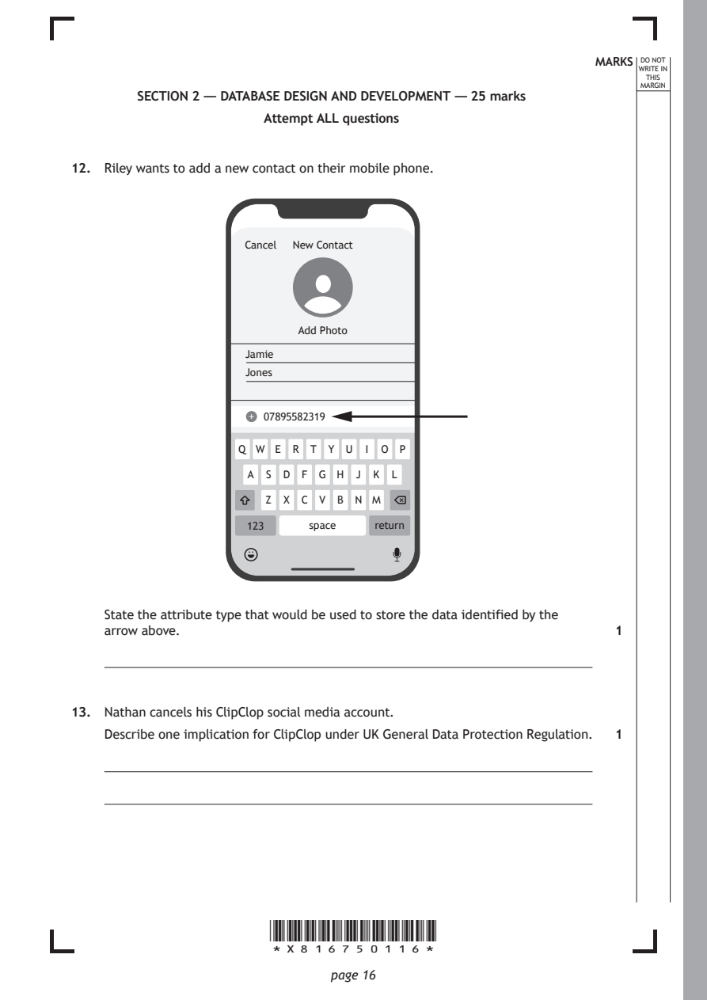
Selectable page text
MARKS DO NOT
WRITE IN
THIS
MARGIN
SECTION 2 — DATABASE DESIGN AND DEVELOPMENT — 25 marks
Attempt ALL questions
12. Riley wants to add a new contact on their mobile phone.
Cancel New Contact
Add Photo
Jamie
Jones
07895582319
Q W E R T Y U I O P
A S D F G H J K L
Z X C V B N M
123 space return
State the attribute type that would be used to store the data identified by the
arrow above. 1
13. Nathan cancels his ClipClop social media account.
Describe one implication for ClipClop under UK General Data Protection Regulation. 1
*X816750116*
page 16PDF page 17
Question 14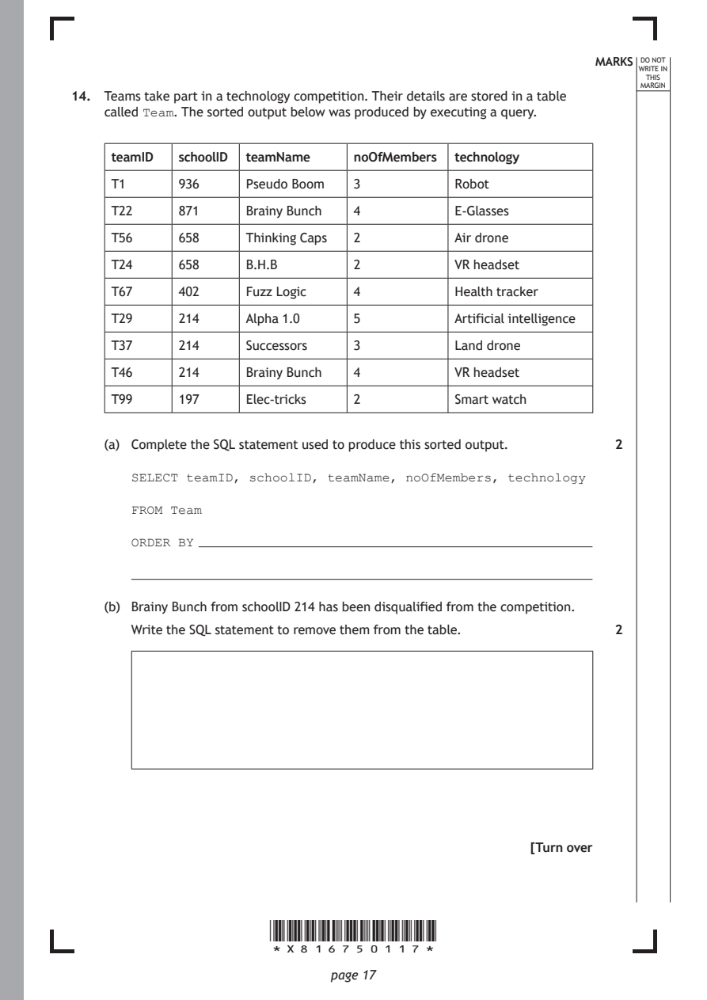
Selectable page text
MARKS DO NOT
WRITE IN
THIS
MARGIN
14. Teams take part in a technology competition. Their details are stored in a table
called . The sorted output below was produced by executing a query.
Team
teamID schoolID teamName noOfMembers technology
T1 936 Pseudo Boom 3 Robot
T22 871 Brainy Bunch 4 E‑Glasses
T56 658 Thinking Caps 2 Air drone
T24 658 B.H.B 2 VR headset
T67 402 Fuzz Logic 4 Health tracker
T29 214 Alpha 1.0 5 Artificial intelligence
T37 214 Successors 3 Land drone
T46 214 Brainy Bunch 4 VR headset
T99 197 Elec‑tricks 2 Smart watch
(a) Complete the SQL statement used to produce this sorted output. 2
SELECT teamID, schoolID, teamName, noOfMembers, technology
FROM Team
ORDER BY
(b) Brainy Bunch from schoolID 214 has been disqualified from the competition.
Write the SQL statement to remove them from the table. 2
[Turn over
*X816750117*
page 17PDF page 18
Question 15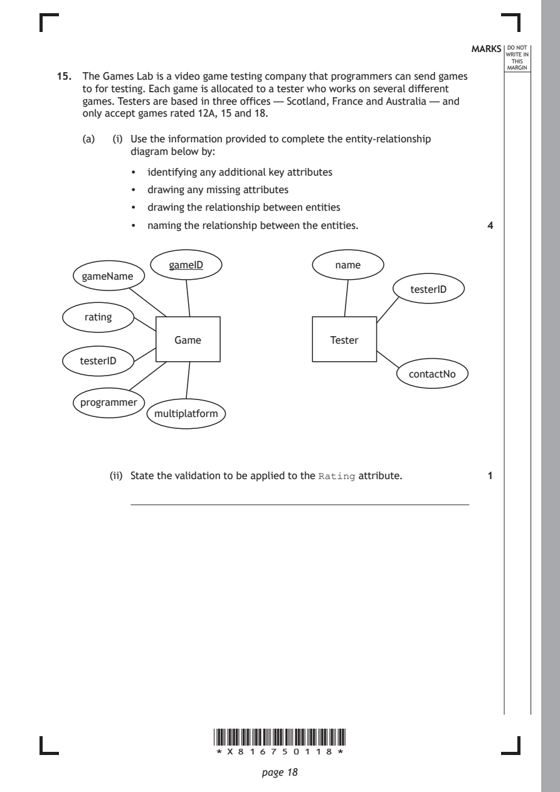
Selectable page text
MARKS DO NOT
WRITE IN
THIS
MARGIN
15. The Games Lab is a video game testing company that programmers can send games
to for testing. Each game is allocated to a tester who works on several different
games. Testers are based in three offices — Scotland, France and Australia — and
only accept games rated 12A, 15 and 18.
(a) (i) Use the information provided to complete the entity‑relationship
diagram below by:
• identifying any additional key attributes
• drawing any missing attributes
• drawing the relationship between entities
• naming the relationship between the entities. 4
gameID name
gameName
testerID
rating
Game Tester
testerID
contactNo
programmer
multiplatform
(ii) State the validation to be applied to the attribute. 1
Rating
*X816750118*
page 18PDF page 19
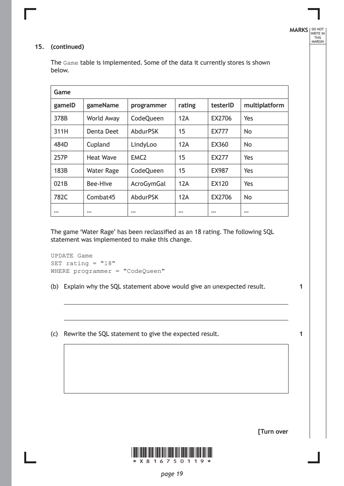
Selectable page text
MARKS DO NOT
WRITE IN
THIS
MARGIN
15. (continued)
The table is implemented. Some of the data it currently stores is shown
Game
below.
Game
gameID gameName programmer rating testerID multiplatform
378B World Away CodeQueen 12A EX2706 Yes
311H Denta Deet AbdurPSK 15 EX777 No
484D Cupland LindyLoo 12A EX360 No
257P Heat Wave EMC2 15 EX277 Yes
183B Water Rage CodeQueen 15 EX987 Yes
021B Bee‑Hive AcroGymGal 12A EX120 Yes
782C Combat45 AbdurPSK 12A EX2706 No
… … … … … …
The game ‘Water Rage’ has been reclassified as an 18 rating. The following SQL
statement was implemented to make this change.
UPDATE Game
SET rating = "18"
WHERE programmer = "CodeQueen"
(b) Explain why the SQL statement above would give an unexpected result. 1
(c) Rewrite the SQL statement to give the expected result. 1
[Turn over
*X816750119*
page 19PDF page 20
Question 16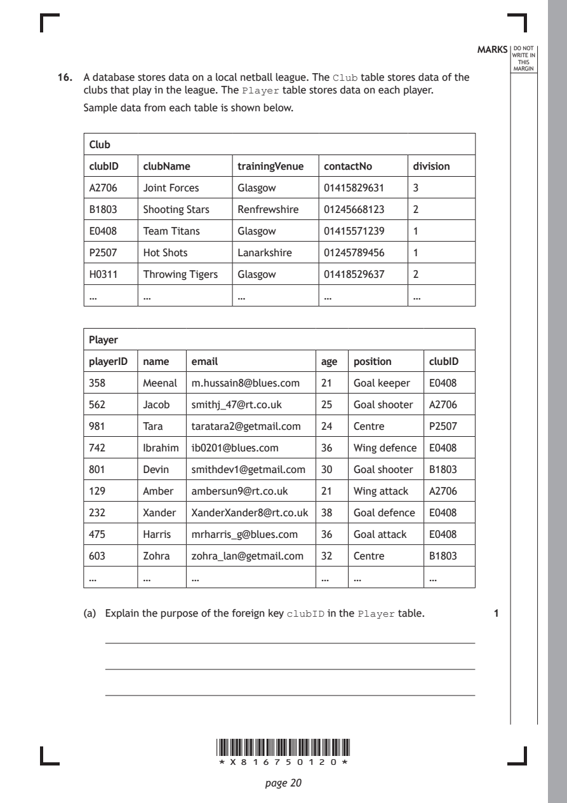
Selectable page text
MARKS DO NOT
WRITE IN
THIS
MARGIN
16. A database stores data on a local netball league. The table stores data of the
Club
clubs that play in the league. The table stores data on each player.
Player
Sample data from each table is shown below.
Club
clubID clubName trainingVenue contactNo division
A2706 Joint Forces Glasgow 01415829631 3
B1803 Shooting Stars Renfrewshire 01245668123 2
E0408 Team Titans Glasgow 01415571239 1
P2507 Hot Shots Lanarkshire 01245789456 1
H0311 Throwing Tigers Glasgow 01418529637 2
… … … … …
Player
playerID name email age position clubID
358 Meenal m.hussain8@blues.com 21 Goal keeper E0408
562 Jacob smithj_47@rt.co.uk 25 Goal shooter A2706
981 Tara taratara2@getmail.com 24 Centre P2507
742 Ibrahim ib0201@blues.com 36 Wing defence E0408
801 Devin smithdev1@getmail.com 30 Goal shooter B1803
129 Amber ambersun9@rt.co.uk 21 Wing attack A2706
232 Xander XanderXander8@rt.co.uk 38 Goal defence E0408
475 Harris mrharris_g@blues.com 36 Goal attack E0408
603 Zohra zohra_lan@getmail.com 32 Centre B1803
… … … … … …
(a) Explain the purpose of the foreign key in the table. 1
clubID Player
*X816750120*
page 20PDF page 21
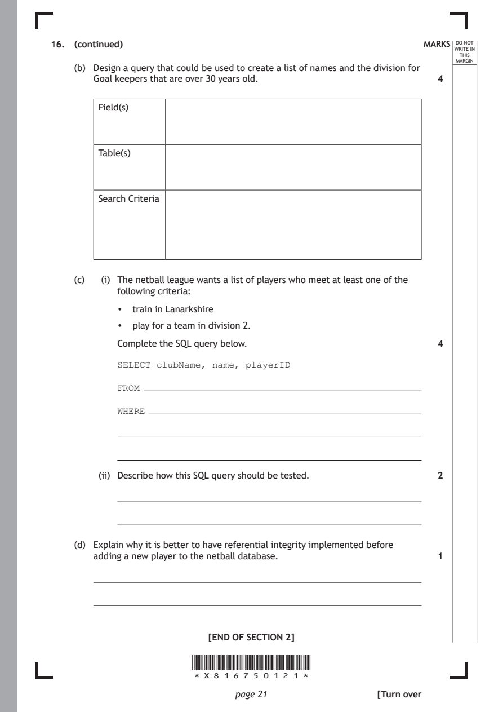
Selectable page text
16. (continued) MARKS DO NOT
WRITE IN
THIS
MARGIN
(b) Design a query that could be used to create a list of names and the division for
Goal keepers that are over 30 years old. 4
Field(s)
Table(s)
Search Criteria
(c) (i) The netball league wants a list of players who meet at least one of the
following criteria:
• train in Lanarkshire
• play for a team in division 2.
Complete the SQL query below. 4
SELECT clubName, name, playerID
FROM
WHERE
(ii) Describe how this SQL query should be tested. 2
(d) Explain why it is better to have referential integrity implemented before
adding a new player to the netball database. 1
[END OF SECTION 2]
*X816750121*
page 21 [Turn overPDF page 22
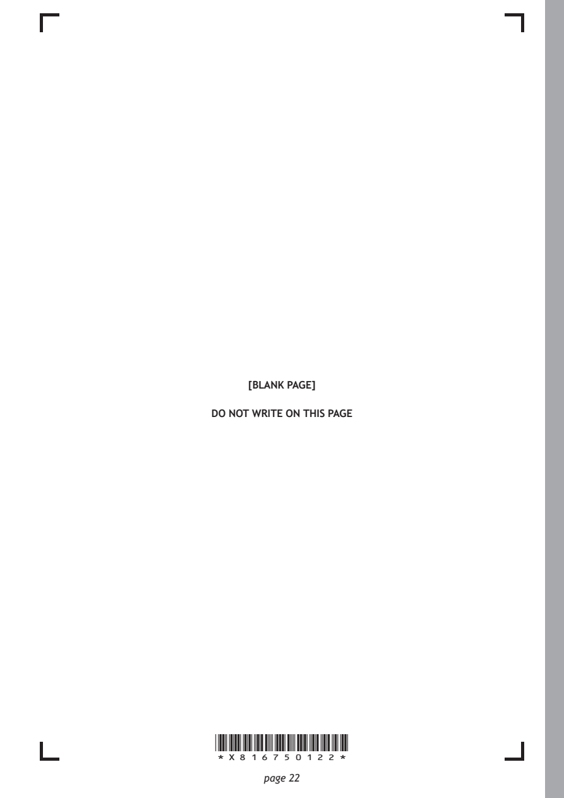
Selectable page text
[BLANK PAGE]
DO NOT WRITE ON THIS PAGE
*X816750122*
page 22PDF page 23
Question 17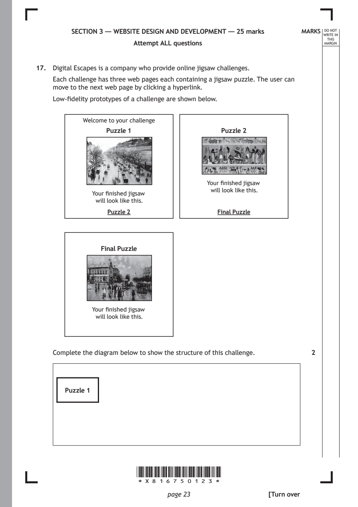
Selectable page text
SECTION 3 — WEBSITE DESIGN AND DEVELOPMENT — 25 marks MARKS DO NOT
WRITE IN
THIS
Attempt ALL questions MARGIN
17. Digital Escapes is a company who provide online jigsaw challenges.
Each challenge has three web pages each containing a jigsaw puzzle. The user can
move to the next web page by clicking a hyperlink.
Low‑fidelity prototypes of a challenge are shown below.
Welcome to your challenge
Puzzle 1 Puzzle 2
Your finished jigsaw
will look like this.
Your finished jigsaw
will look like this.
Puzzle 2 Final Puzzle
Final Puzzle
Your finished jigsaw
will look like this.
Complete the diagram below to show the structure of this challenge. 2
Puzzle 1
*X816750123*
page 23 [Turn overPDF page 24
Question 18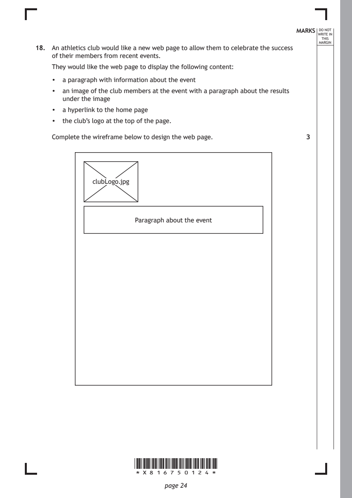
Selectable page text
MARKS DO NOT
WRITE IN
THIS
MARGIN
18. An athletics club would like a new web page to allow them to celebrate the success
of their members from recent events.
They would like the web page to display the following content:
• a paragraph with information about the event
• an image of the club members at the event with a paragraph about the results
under the image
• a hyperlink to the home page
• the club’s logo at the top of the page.
Complete the wireframe below to design the web page. 3
clubLogo.jpg
Paragraph about the event
*X816750124*
page 24PDF page 25
Question 19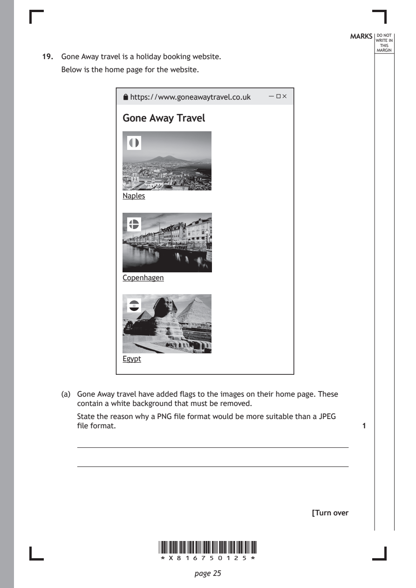
Selectable page text
MARKS DO NOT
WRITE IN
THIS
MARGIN
19. Gone Away travel is a holiday booking website.
Below is the home page for the website.
https://www.goneawaytravel.co.uk
Gone Away Travel
Naples
Copenhagen
Egypt
(a) Gone Away travel have added flags to the images on their home page. These
contain a white background that must be removed.
State the reason why a PNG file format would be more suitable than a JPEG
file format. 1
[Turn over
*X816750125*
page 25PDF page 26
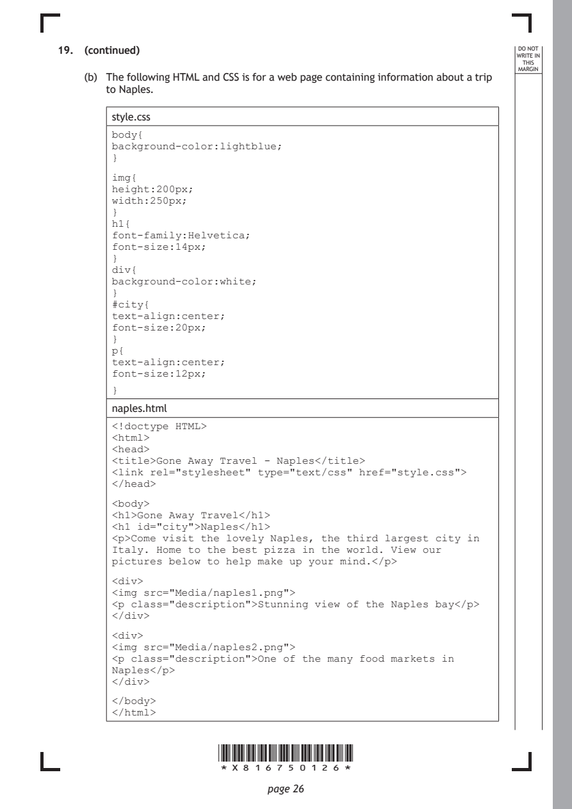
Selectable page text
19. (continued) DO NOT
WRITE IN
THIS
MARGIN
(b) The following HTML and CSS is for a web page containing information about a trip
to Naples.
style.css
body{
background-color:lightblue;
}
img{
height:200px;
width:250px;
}
h1{
font-family:Helvetica;
font-size:14px;
}
div{
background-color:white;
}
#city{
text-align:center;
font-size:20px;
}
p{
text-align:center;
font-size:12px;
}
naples.html
<!doctype HTML>
<html>
<head>
<title>Gone Away Travel - Naples</title>
<link rel="stylesheet" type="text/css" href="style.css">
</head>
<body>
<h1>Gone Away Travel</h1>
<h1 id="city">Naples</h1>
<p>Come visit the lovely Naples, the third largest city in
Italy. Home to the best pizza in the world. View our
pictures below to help make up your mind.</p>
<div>
<img src="Media/naples1.png">
<p class="description">Stunning view of the Naples bay</p>
</div>
<div>
<img src="Media/naples2.png">
<p class="description">One of the many food markets in
Naples</p>
</div>
</body>
</html>
*X816750126*
page 26PDF page 27
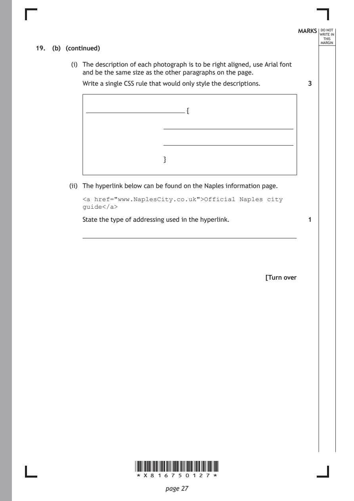
Selectable page text
MARKS DO NOT
WRITE IN
THIS
MARGIN
19. (b) (continued)
(i) The description of each photograph is to be right aligned, use Arial font
and be the same size as the other paragraphs on the page.
Write a single CSS rule that would only style the descriptions. 3
������������������������������������������������������ {
�����������������������������������������������������������������������
�����������������������������������������������������������������������
}
(ii) The hyperlink below can be found on the Naples information page.
<a href="www.NaplesCity.co.uk">Official Naples city
guide</a>
State the type of addressing used in the hyperlink. 1
[Turn over
*X816750127*
page 27PDF page 28
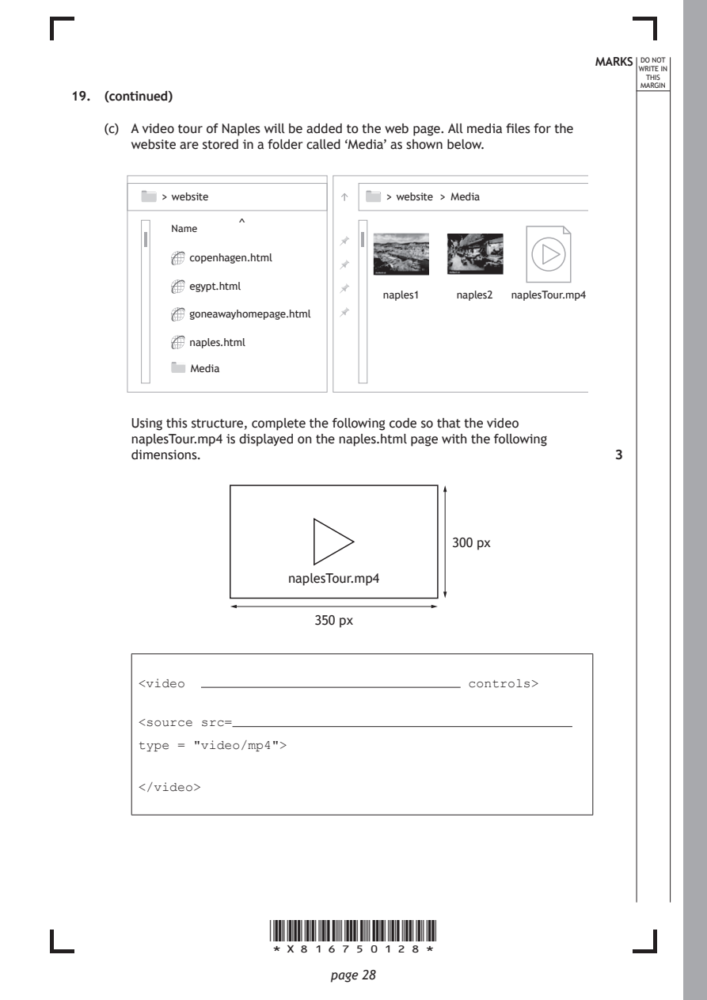
Selectable page text
MARKS DO NOT
WRITE IN
THIS
MARGIN
19. (continued)
(c) A video tour of Naples will be added to the web page. All media files for the
website are stored in a folder called ‘Media’ as shown below.
> >
*X816750128*
page 28
>
website website > Media
Name
copenhagen.html
egypt.html
naples1 naples2 naplesTour.mp4
goneawayhomepage.html
naples.html
Media
Using this structure, complete the following code so that the video
naplesTour.mp4 is displayed on the naples.html page with the following
dimensions. 3
300 px
naplesTour.mp4
350 px
�����������������������������������������������������������������������
<video controls>
���������������������������������������������������������������������������������������������
<source src=
type = "video/mp4">
</video>PDF page 29
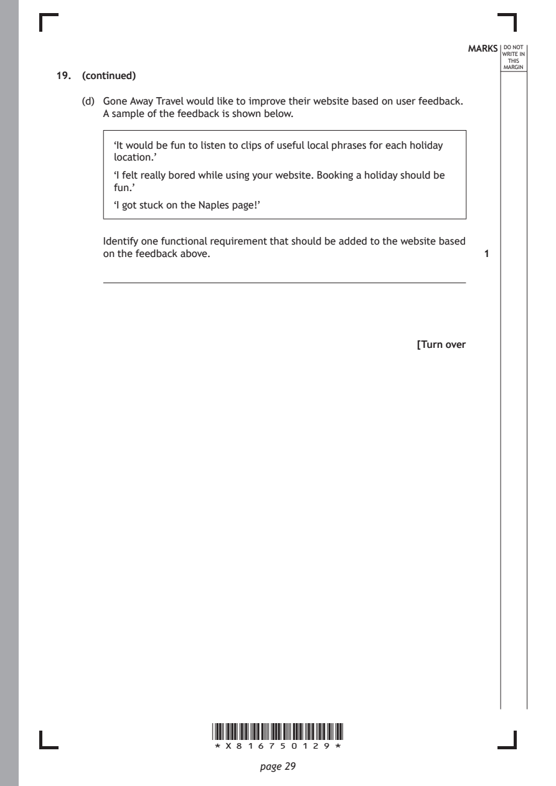
Selectable page text
MARKS DO NOT
WRITE IN
THIS
MARGIN
19. (continued)
(d) Gone Away Travel would like to improve their website based on user feedback.
A sample of the feedback is shown below.
‘It would be fun to listen to clips of useful local phrases for each holiday
location.’
‘I felt really bored while using your website. Booking a holiday should be
fun.’
‘I got stuck on the Naples page!’
Identify one functional requirement that should be added to the website based
on the feedback above. 1
[Turn over
*X816750129*
page 29PDF page 30
Question 20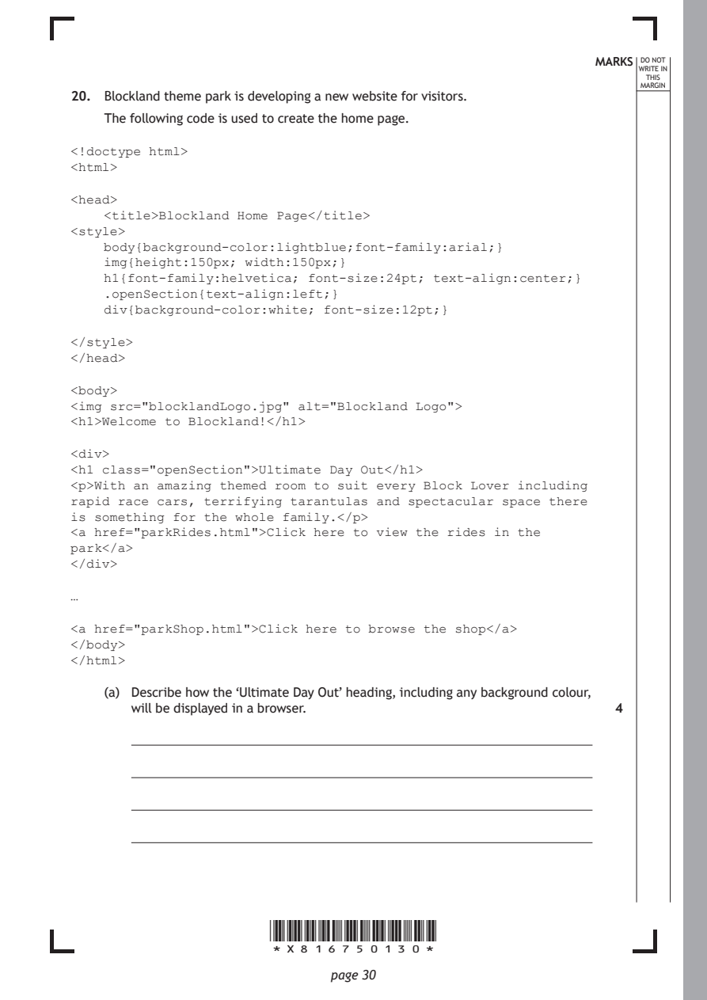
Selectable page text
MARKS DO NOT
WRITE IN
THIS
MARGIN
20. Blockland theme park is developing a new website for visitors.
The following code is used to create the home page.
<!doctype html>
<html>
<head>
<title>Blockland Home Page</title>
<style>
body{background-color:lightblue;font-family:arial;}
img{height:150px; width:150px;}
h1{font-family:helvetica; font-size:24pt; text-align:center;}
.openSection{text-align:left;}
div{background-color:white; font-size:12pt;}
</style>
</head>
<body>
<img src="blocklandLogo.jpg" alt="Blockland Logo">
<h1>Welcome to Blockland!</h1>
<div>
<h1 class="openSection">Ultimate Day Out</h1>
<p>With an amazing themed room to suit every Block Lover including
rapid race cars, terrifying tarantulas and spectacular space there
is something for the whole family.</p>
<a href="parkRides.html">Click here to view the rides in the
park</a>
</div>
…
<a href="parkShop.html">Click here to browse the shop</a>
</body>
</html>
(a) Describe how the ‘Ultimate Day Out’ heading, including any background colour,
will be displayed in a browser. 4
*X816750130*
page 30PDF page 31
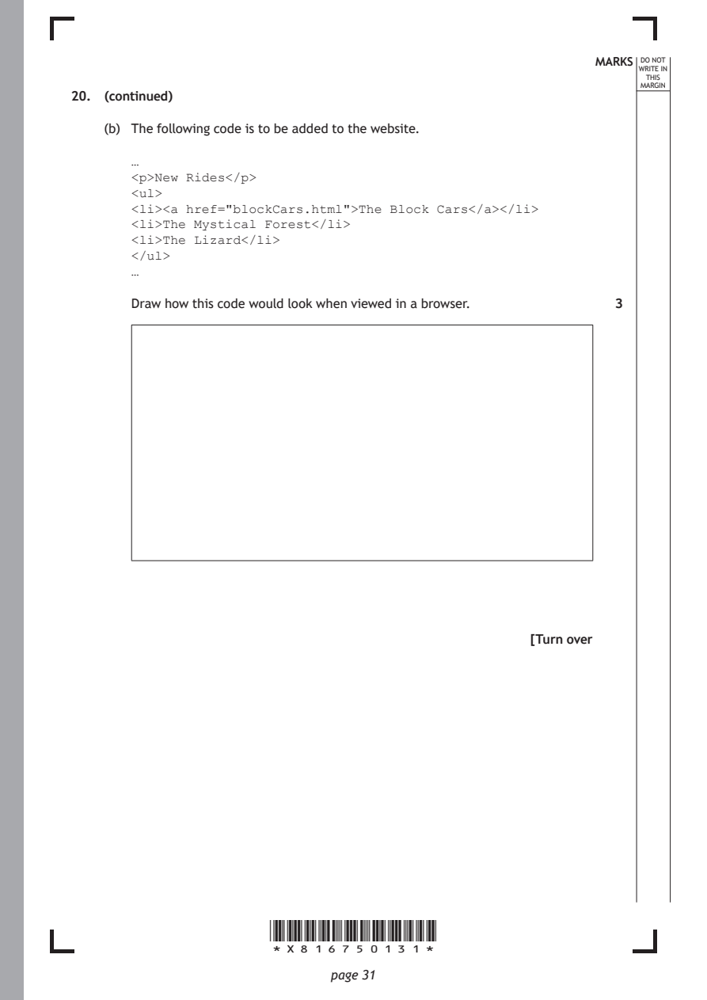
Selectable page text
MARKS DO NOT
WRITE IN
THIS
MARGIN
20. (continued)
(b) The following code is to be added to the website.
…
<p>New Rides</p>
<ul>
<li><a href="blockCars.html">The Block Cars</a></li>
<li>The Mystical Forest</li>
<li>The Lizard</li>
</ul>
…
Draw how this code would look when viewed in a browser. 3
[Turn over
*X816750131*
page 31PDF page 32
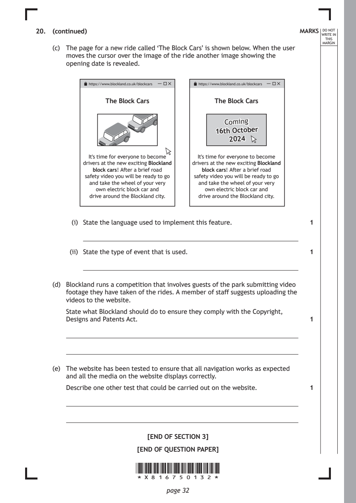
Selectable page text
20. (continued) MARKS DO NOT
WRITE IN
THIS
MARGIN
(c) The page for a new ride called ‘The Block Cars’ is shown below. When the user
moves the cursor over the image of the ride another image showing the
opening date is revealed.
https://www.blockland.co.uk/blockcars https://www.blockland.co.uk/blockcars
The Block Cars The Block Cars
CCoommiinngg
1166tthh OOccttoobbeerr
22002244
It's time for everyone to become It's time for everyone to become
drivers at the new exciting Blockland drivers at the new exciting Blockland
block cars! After a brief road block cars! After a brief road
safety video you will be ready to go safety video you will be ready to go
and take the wheel of your very and take the wheel of your very
own electric block car and own electric block car and
drive around the Blockland city. drive around the Blockland city.
(i) State the language used to implement this feature. 1
(ii) State the type of event that is used. 1
(d) Blockland runs a competition that involves guests of the park submitting video
footage they have taken of the rides. A member of staff suggests uploading the
videos to the website.
State what Blockland should do to ensure they comply with the Copyright,
Designs and Patents Act. 1
(e) The website has been tested to ensure that all navigation works as expected
and all the media on the website displays correctly.
Describe one other test that could be carried out on the website. 1
[END OF SECTION 3]
[END OF QUESTION PAPER]
*X816750132*
page 32PDF page 33

Selectable page text
MARKS DO NOT
WRITE IN
THIS
MARGIN
ADDITIONAL SPACE FOR ANSWERS
*X816750133*
page 33PDF page 34
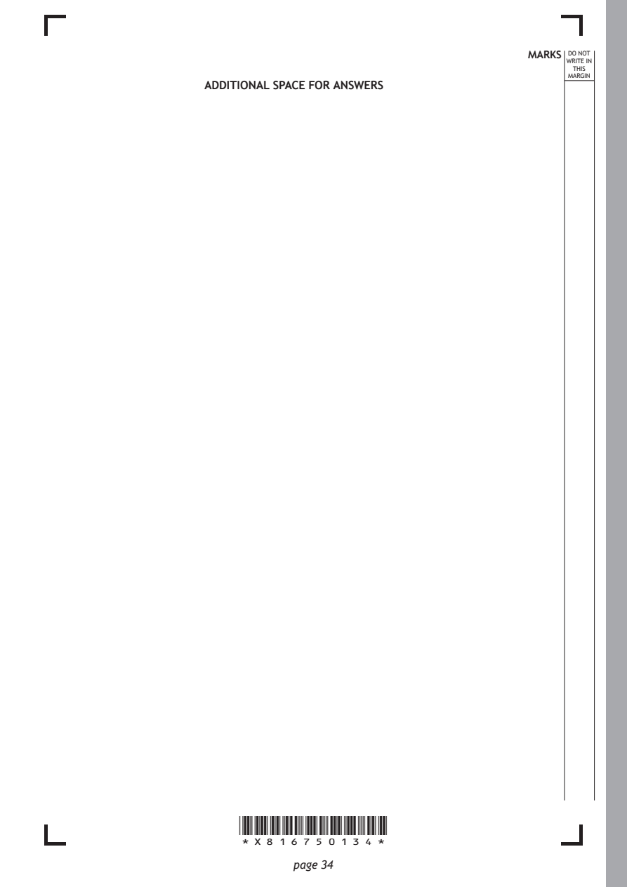
Selectable page text
MARKS DO NOT
WRITE IN
THIS
MARGIN
ADDITIONAL SPACE FOR ANSWERS
*X816750134*
page 34PDF page 35
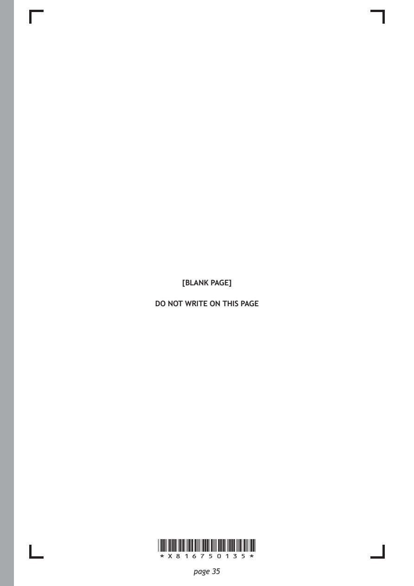
Selectable page text
[BLANK PAGE]
DO NOT WRITE ON THIS PAGE
*X816750135*
page 35PDF page 36
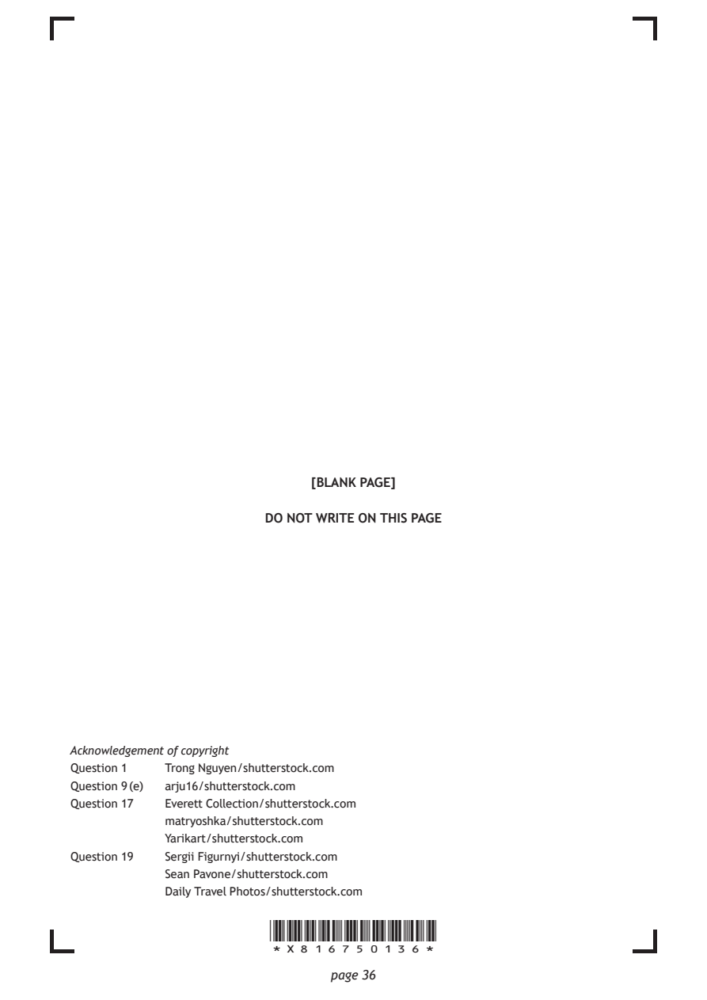
Selectable page text
[BLANK PAGE]
DO NOT WRITE ON THIS PAGE
Acknowledgement of copyright
Question 1 Trong Nguyen/shutterstock.com
Question 9 (e) arju16/shutterstock.com
Question 17 Everett Collection/shutterstock.com
matryoshka/shutterstock.com
Yarikart/shutterstock.com
Question 19 Sergii Figurnyi/shutterstock.com
Sean Pavone/shutterstock.com
Daily Travel Photos/shutterstock.com
*X816750136*
page 36